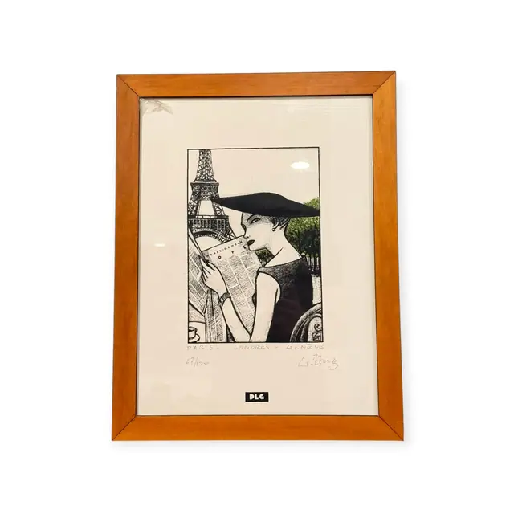
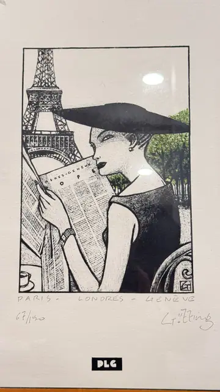

Paintings & Prints
Paris Londres Geneve, Woman Reading a Newspaper, Gutting, Numbered Edition, Framed
Gutting · late 20th century
Price Upon Request


About the Item
Gutting. A bold black and white graphic image of a woman in a sleeveless black dress and an oversized black picture hat, seen in profile as she holds an open newspaper. Behind her the Eiffel Tower rises through fine hatched lines and a row of trees fills the right side, all rendered in dense pen-like strokes against the bare white sheet. A small espresso cup sits at the lower left and a scrolled iron cafe chair at the right; the only relief from the black and white is a touch of green in the foliage. A black rectangular gallery tab reading DLG is fixed to the mat below the image. Medium: lithograph or screenprint on paper, hand coloured in part. Signed lower right of the sheet, in pencil, reading "Gutting". Edition: 67/150. Inscribed on the reverse or mount: PARIS - LONDRES - GENEVE; 67/150; DLG. Condition: Sheet clean and bright with no visible foxing; some reflection on the glass at the upper right.
Details
- Creator:
- Gutting
- Creation Year:
- late 20th century
- Dimensions:
- Height: 18.25 in (46.36 cm)
Width: 14.0 in (35.56 cm)
outside of frame - Medium:
- lithograph or screenprint on paper, hand coloured in part
- Edition:
- 67/150
- Period:
- 20Th
- Condition:
- Offered in the condition shown in the photographs.
- Reference Number:
- VO-72
- Documentation:
- no certificate photographed
- Gallery Location:
- DLG (label on the mat)